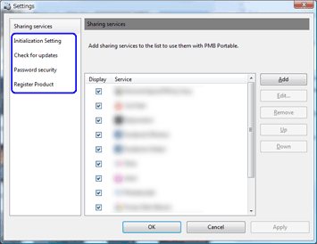

更改其它设置

更改其它设置
您可以更改PMB Portable设置。
- 单击主窗口中的
 。
会显示设置窗口。
。
会显示设置窗口。 - 选择要更改的项目。

［初始化设置］ 选中［当程序重新运行时显示语言选择和地区选择画面。 ］即会在下次重新启动时激活语言和地区更改功能。如果选中［当程序重新运行时对设置进行初始化。 ］，则会在下次启动程序时初始化设置。 ［更新确认］ 勾选 ［有任何更新时，通知用户］时，将会通知您最新版本。 ［密码安全］ 可设置启动上传工具的密码。
通过单击［设置上传工具密码］显示密码设置窗口。［注册产品］ 单击［注册产品］按钮可以访问产品注册网站。
|
Copyright 2011 Sony Corporation |